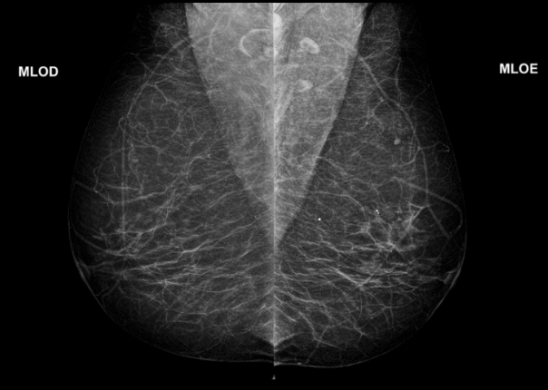
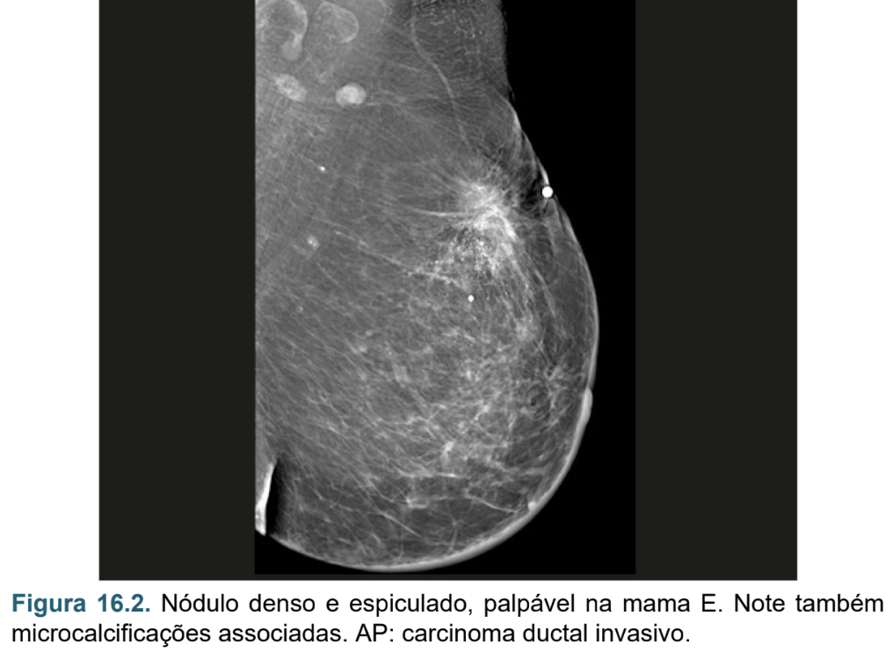
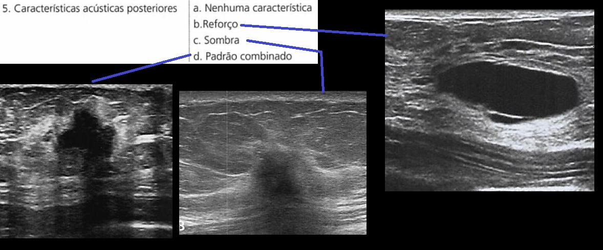
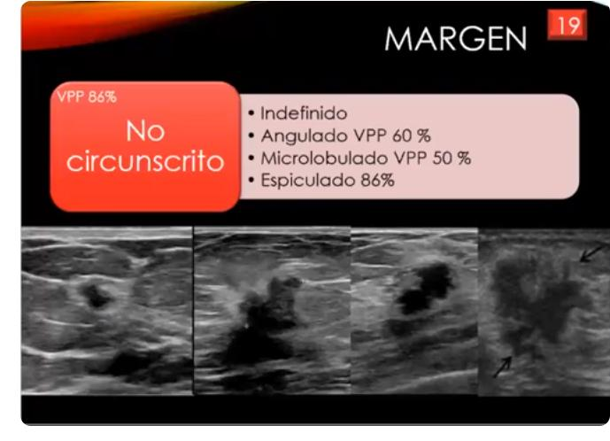

Imagem de Mama — Mamografia e Ultrassom
Definição
A mamografia (padrão-ouro para rastreamento) e o ultrassom mamário são os principais métodos de imagem da mama. Ambos utilizam o sistema BI-RADS para classificar achados e definir a conduta. O USG complementa, mas não substitui a mamografia no rastreamento.
Quando Pedir Cada Exame
| Situação | Mamografia | USG |
|---|---|---|
| Rastreamento (risco habitual) | Sim (padrão-ouro) | Não (exceto mama densa) |
| Nódulo palpável < 40 anos | Solicitar também | Primeiro exame |
| Nódulo palpável ≥ 40 anos | Sim | Complementar |
| Mama densa (categoria C/D na mamografia) | Sim | Complementar |
| Guia de biópsia | Não | Sim (USG guiada) |
| Prótese de silicone | Com manobra de Eklund | Sim |
| Gravidez / lactação | Evitar | Sim (sem radiação) |
Rastreamento — Diretrizes
| Referência | Início | Frequência |
|---|---|---|
| SBM / CBR / FEBRASGO | 40 anos | Anual |
| Ministério da Saúde | 50 anos | Bienal |
| Alto risco (BRCA1/2, TP53, radioterapia torácica <30 anos) | 30–35 anos | Anual + RM mamária |
Sistema BI-RADS — Classificação e Conduta
| BI-RADS | Interpretação | Risco de malignidade | Conduta |
|---|---|---|---|
| 0 | Incompleto — precisa imagem complementar | — | Completar investigação |
| 1 | Normal | 0% | Rastreamento de rotina |
| 2 | Achado benigno (cisto simples, calcificação vascular, linfonodo intramamário) | 0% | Rastreamento de rotina |
| 3 | Provavelmente benigno | ≤ 2% | Controle em 6 meses → 12m → 24m |
| 4A | Baixa suspeição | 3–10% | Biópsia |
| 4B | Moderada suspeição | 11–50% | Biópsia |
| 4C | Alta suspeição | 51–94% | Biópsia |
| 5 | Altamente sugestivo de malignidade (≥ 2 achados suspeitos) | > 95% | Biópsia obrigatória |
| 6 | Malignidade confirmada por biópsia prévia | — | Tratamento oncológico |
⚠️ BI-RADS 0 = exame INCOMPLETO (não é negativo)
⚠️ BI-RADS 3 = "provavelmente benigno" ≠ benigno — seguimento em 6 meses obrigatório
⚠️ Se BI-RADS 3 mudar em qualquer seguimento → reclassificar para 4 → biópsia
Seguimento BI-RADS 3
- 1º controle: 6 meses após o primeiro exame
- 2º controle: mais 6 meses (total: 12 meses)
- 3º controle: mais 12 meses (total: 24 meses)
- Estável em 24 meses → pode reclassificar para BI-RADS 2
Achados na Mamografia


Nódulos — Características a Analisar
| Característica | Benigno | Maligno |
|---|---|---|
| Forma | Oval, redondo | Irregular |
| Margens | Circunscrita (>75% visível) | Espiculada, indistinta, microlobulada |
| Densidade | Com gordura, isodenso | Hiperdenso |
Calcificações
| Tipo | Significado |
|---|---|
| Grosseiras ("pipoca", vasculares, esféricas) | Benignas — BI-RADS 2 |
| Pleomórficas, lineares, ramificadas, agrupadas | Suspeitas → BI-RADS ≥ 4 |
Outros Achados
- Distorção arquitetural sem cirurgia prévia → sempre suspeita
- Assimetria progressiva → investigar
- Microcalcificações = sinal mais precoce de câncer — só detectadas pela mamografia
Achados no USG


| Achado | BI-RADS | Significado |
|---|---|---|
| Nódulo oval, paralelo, circunscrito, isoecogênico | 3 | Provavelmente benigno → controle |
| Nódulo hipoecogênico, irregular, margens anguladas | ≥ 4 | Suspeito → biópsia |
| Cisto simples (anecoico, paredes finas, reforço posterior) | 2 | Benigno |
| Ectasia ductal | 2 | Benigna (30% dos fluxos papilares) |
Localização dos Achados — Sistema de Relógio
- Mamilo = centro (12h = superior; 6h = inferior; 3h = lateral D; 9h = lateral E)
- Descrever: "Nódulo em 10h, a 3 cm do mamilo, mama esquerda, quadrante superior externo"
- QSE (quadrante superior externo) = localização mais frequente do câncer de mama
Manobra de Eklund (Pacientes com Prótese)
Empurrar a prótese para posterior + comprimir o tecido glandular para anterior. Realizada nas duas incidências. Sem a manobra: imagem incompleta (a prótese encobre a glândula).
Incidências da Mamografia
- Crânio-caudal (CC): feixe superior → inferior; mostra quadrantes medial e lateral; sem músculo peitoral
- Médio-lateral oblíqua (MLO): feixe medial → lateral oblíquo; mostra quadrantes superiores e inferiores; músculo peitoral visível; plaquinha do receptor virada para lateral
Perguntas que o professor provavelmente vai fazer
- Qual o padrão-ouro para rastreamento do câncer de mama? → Mamografia
- Por que o USG não substitui a mamografia? → Não detecta microcalcificações (sinal mais precoce de câncer)
- Mulher de 32 anos com nódulo palpável — qual exame? → USG (< 40 anos) ± mamografia se suspeito
- O que é BI-RADS 4 e qual conduta? → Suspeito (3–94%) subdividido em A/B/C → biópsia em todos
- Qual a diferença entre cisto simples e cisto complicado? → Simples: anecoico, paredes lisas, reforço posterior = BI-RADS 2. Complicado: debris internos, septações = BI-RADS 3–4
Alertas OSCE ⚠️
- Mamografia NÃO pode ser substituída por USG no rastreamento
- BI-RADS 0 = incompleto (não confundir com negativo)
- BI-RADS 3 exige seguimento em 6 meses — não dispensar paciente
- Cisto simples = BI-RADS 2 (benigno, sem biópsia)
- BI-RADS 6 = malignidade JÁ confirmada — não confundir com BI-RADS 5
- Manobra de Eklund é obrigatória em pacientes com prótese
Fonte
- Gerado a partir de:
conteudo_mamografia.md(Aula Prática Mamografia) +conteudo_usg_mamas.md(USG Mamas) - Seções consultadas: BI-RADS, incidências mamográficas, achados suspeitos/benignos, rastreamento, manobra de Eklund, sistema de relógio
- Gaps identificados: USG de mamas com muito conteúdo em slides/imagens (IMG tags) não renderizados como texto; descrição dos achados por imagem foi complementada com conhecimento geral